White-box Model Interpretation
CS-GY 9223 - Fall 2025
Claudio Silva
NYU Tandon School of Engineering
2025-09-29
Week 5: White-box Model Interpretation
Model Interpretation and Explanation
White-box Approaches and Visualizations
Related Research in VIS & AI
Today we focus on interpretable machine learning models and their visualization. We’ll explore intrinsically interpretable models like linear regression, GAMs, decision trees, and rule-based systems. We’ll see how visualization helps us understand model behavior and how different model types offer different forms of interpretability.
Outline
Model Interpretation and Explanation
White-box Approaches and Visualizations Related Research in VIS & AI
What is Interpretability?
“Interpretability is the degree to which a human can understand the cause of a decision”
Can you predict what the model will do?
Can you understand why it made a particular decision?
Can you trust the model’s reasoning process?
Interpretability fundamentally means understanding causation - why did the model produce this output? A more operational definition: a model is interpretable if a human can correctly and efficiently predict the model’s results. This goes beyond just seeing outputs - it requires understanding the mechanism.
Why Model Interpretation & Explanation?
Debugging & Validation : Detect bugs, biases, data leakageKnowledge Discovery : Learn patterns, generate hypothesesBuilding Trust : Increase confidence, social acceptanceCompliance : Legal/ethical requirements, fairness audits
Interpretability serves multiple critical functions. For debugging, we can catch issues like the model learning spurious correlations. For science, interpretable models reveal domain insights. For deployment, stakeholders need to trust the system. In regulated domains like healthcare and finance, interpretability may be legally required to justify decisions.
Machine-learning-assisted materials discovery using failed experiments
Researchers firstly built a database of chemistry experiments (new material).
Then they train an SVM to predict whether a new chemistry experiment will be successful.
Then they train a surrogate DT to explain the model to learn more about the experiment.
This Nature paper demonstrates using interpretable models to understand scientific experiments. By training a surrogate decision tree on SVM predictions, researchers could extract human-understandable rules about which experimental conditions lead to success.
Properties of Good Explanations
Human explanations are naturally:
Contrastive : “Why this, rather than that?” (not exhaustive)Selective : Focus on 1-3 key reasons (not all causes)Social : Tailored to audience and contextFocused on abnormal : Highlight surprising factorsTruthful but simple : Balance accuracy with understandability
Research on human explanations reveals important patterns. People don’t want exhaustive causal chains - they want contrastive answers comparing to alternatives. Good explanations are selective, providing just a few key factors rather than everything. They should be tailored to the audience’s knowledge and focus on surprising or abnormal causes rather than routine factors. This guides how we should design ML explanations.
Why Model Interpretation & Explanation?
Fairness
Privacy
Reliability or Robustness
Causality
Trust
This paper highlights critical concerns in ML deployment. Fairness requires understanding if protected attributes influence decisions. Privacy needs transparency about what data influences predictions. Robustness demands knowing if the model relies on brittle features. Causality questions whether correlations are meaningful. All these build toward the ultimate goal: trust in AI systems.
Taxonomy of Interpretability Methods
Intrinsic (White-box)
Interpretability built into model structure
Examples: Linear models, short decision trees, sparse models
Understand by examining model internals
Today’s focus
Post-hoc (Black-box)
Explain after training
Works with any model (neural nets, ensembles)
Examples: LIME, SHAP, saliency maps
Next week’s topic
Additional dimensions: Model-specific vs Model-agnostic | Local vs Global | Feature importance vs Feature effects
Intrinsic interpretability means the model structure itself is understandable - you can look at a decision tree and trace the logic. Post-hoc methods generate explanations after the fact for any model. We also distinguish: model-specific (works for one type) vs model-agnostic (works for any), local (explains one prediction) vs global (explains overall behavior), and feature importance (which features matter) vs feature effects (how do features influence predictions). Today we focus on intrinsically interpretable white-box models.
Outline
Model Interpretation and Explanation White-box Approaches and Visualizations
Related Research in VIS & AI
White-box Models
We discuss the following models that are intrinsically interpretable:
Linear Regression
Generalized Additive Models (GAM)
Tree-based Models
Decision Rules
These model families offer varying degrees of expressiveness and interpretability. Linear models are simplest but most limited; GAMs add non-linear flexibility; trees provide natural visual structure; rules offer explicit logic.
Linear Regression
Linear models can be used to model the dependence of a regression target y on some features x in a format as below: \[\begin{equation}
y = \beta_0 + \beta_1 x_1 + \ldots + \beta_n x_n + \varepsilon\end{equation}\]
The predicted target \(y\) is a linear combination of the weighted features \(\beta_i x_i\) . The estimated linear equation is a hyperplane in the feature/target space (a simple line in the case of a single feature).
The weights specify the slope (gradient) of the hyperplane in each direction.
Linear regression remains one of the most interpretable models. Each coefficient directly tells us how much the prediction changes when that feature increases by one unit, holding all else constant. This direct interpretability makes linear models valuable for policy decisions and scientific inference.
Linear Regression
This visualization shows the geometric interpretation of linear regression as fitting a hyperplane through the data points. The residuals (vertical distances from points to the plane) are minimized during training using least squares optimization.
Linear Regression: An Example of Housing Price
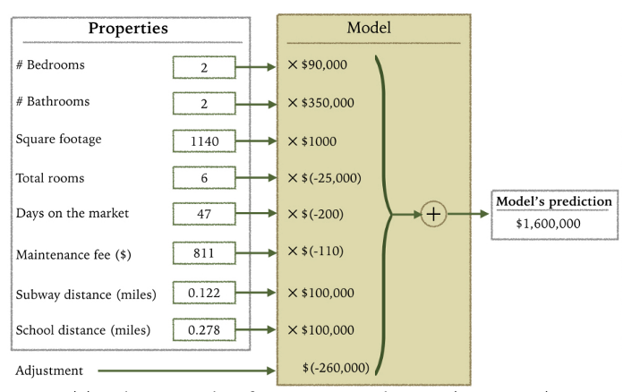How do you interpret the influence of each property on the prediction of housing price?
In this housing price model, we can directly read off the coefficients: each additional bedroom adds a certain amount to the price, each square foot contributes its value, proximity to schools has a measurable effect. The sign tells us direction (positive/negative), the magnitude tells us importance. This direct interpretability makes linear models valuable for explaining decisions to stakeholders.
Interpreting Linear Model Coefficients
Basic interpretation: An increase in feature \(x_j\) by one unit changes the prediction by \(\beta_j\) units
✅ Numerical features : Direct marginal effect (holding others constant)
✅ Categorical features : Coefficients show difference from reference category
⚠️ Scale-dependent : Coefficients change with feature units
⚠️ “Holding others constant” assumes independence
The standard interpretation is deceptively simple: each coefficient tells you the marginal effect of that feature. But be careful - this interpretation assumes you can change one feature while holding others constant, which may not be realistic. For example, in housing, you can’t easily change square footage without affecting other features. Coefficients are also scale-dependent - standardizing features helps comparisons.
Important Assumptions for Interpretation
Linear models make strong assumptions:
Linearity : Effects are additive (no interactions unless explicitly added)Independence : Features are not strongly correlatedHomoscedasticity : Constant error varianceNo multicollinearity : Correlated features can flip coefficient signs!
Example: Housing model with both “square footage” AND “number of rooms” - These features are highly correlated (VIF > 10) - Coefficients become unstable and unreliable for interpretation - Model predicts well, but individual coefficients are meaningless
When features are correlated (multicollinearity), coefficients become unstable and can even change signs in counterintuitive ways. VIF (Variance Inflation Factor) measures this: VIF = 1 means no correlation, VIF > 10 indicates severe multicollinearity. In the housing example, square footage and rooms are highly correlated - bigger houses have more rooms. Their individual coefficients become unreliable because the model can’t separate their independent effects. The model can still predict well, but you shouldn’t interpret individual coefficients. Always check VIF or correlation matrices before interpreting coefficients.
Evaluation of Linear Regression Model
R Square
\(R^2\) (R-squared) \[\begin{equation}
R^2 = 1 - \frac{\sum (y_i - \hat{y}_i)^2}{\sum (y_i - \bar{y})^2}
\end{equation}\]
Mean Square Error (MSE)/Root Mean Square Error (RMSE)
\[\begin{equation}
MSE = \frac{1}{N} \sum_{i=1}^{N} (y_i - \hat{y}_i)^2
\end{equation}\]
Mean Absolute Error (MAE)
\[\begin{equation}
MAE = \frac{1}{N} \sum_{i=1}^{N} |y_i - \hat{y}_i|
\end{equation}\]
R-squared tells us the proportion of variance explained by the model (ranges 0-1, higher is better). MSE/RMSE penalize large errors more heavily than MAE due to squaring. Choose metrics based on your application’s tolerance for outliers - use MAE if you want robust estimates, MSE if large errors are particularly costly. Note that R-squared can be misleading with many features - adjusted R-squared accounts for model complexity.
Visual Analytics (VA) Systems for Linear Regression
There is a trade-off between model complexity (number of features) and accuracy.
This VA system helps model building (feature ranking) and model validation.
This IEEE TVCG Best Paper (VAST 2013) presents an interactive system for exploring the accuracy-complexity tradeoff in linear models. Users can interactively add or remove features and immediately see the impact on model performance metrics like R-squared and cross-validation error. This helps identify the simplest model that achieves acceptable accuracy.
Pros and Cons of Linear Models
✅ Pros:
Highly interpretable : Each coefficient has clear meaningStatistical guarantees : Inference possible when assumptions holdFast : Analytical solution, no hyperparametersTransparent : Easy to explain to stakeholders
⚠️ Cons:
Linearity assumption : Cannot capture non-linear relationshipsMulticollinearity : Correlated features break interpretationAssumption violations : Wrong inference if residuals not normalNo interactions : Must manually add interaction terms
Linear models shine when relationships are truly linear and assumptions hold (normal residuals, homoscedasticity, no multicollinearity). But real-world data often violates these assumptions, leading to poor predictions and incorrect statistical inference. The analytical solution is fast but inflexible.
Limitations of Linear Models
Features are assumed to follow Gaussian distribution
No interactions between features
What if your dataset does not follow the assumptions?
The linearity assumption is particularly limiting. Many real phenomena have non-linear relationships (e.g., diminishing returns, threshold effects, exponential growth) and feature interactions (e.g., temperature × humidity jointly affecting comfort). When data violates linear assumptions, we need more flexible models like GAMs.
Generalized Additive Models (GAMs)
GAMs extend linear models by replacing linear terms with flexible shape functions:
\[\begin{equation}
g(\mathbb{E}[y|X]) = \beta_0 + \sum_{j=1}^{p} f_j(x_{j})
\end{equation}\]
Key idea: Replace \(\beta_j x_j\) (linear) with \(f_j(x_j)\) (flexible smooth function)
Each \(f_j\) is learned from data (typically using splines)
Maintains additive structure → still interpretable
Can mix linear and non-linear terms
GAMs replace linear terms with smooth functions that can capture non-linear patterns. Each feature gets its own learned shape function (often splines or smoothing functions). The model remains additive (no interactions by default) which preserves interpretability - we can visualize each function independently. The link function g allows for different target distributions (normal for regression, logistic for classification).
How GAMs Work: Splines as Building Blocks
GAMs use splines (piecewise polynomial functions) to approximate smooth curves:
Technical approach: - Replace feature \(x_j\) with basis functions - Fit weights to these basis functions - Add penalty term for smoothness
Interpretation: - Visualize each \(f_j(x_j)\) as a curve - Y-axis shows contribution to prediction - Relative to mean prediction
Under the hood, GAMs convert each feature into multiple “basis functions” (like polynomial terms or spline segments). The model learns weights for these basis functions, similar to how linear regression learns coefficients. A smoothness penalty prevents overfitting by penalizing overly wiggly curves. This is controlled by cross-validation. The result: smooth, interpretable curves showing each feature’s effect.
Generalized Additive Models (GAMs): An Example
\[\begin{equation}
Wage = f(year, age, education) = b_0 + f_1(year) + f_2(age) + f_3(education)
\end{equation}\]
This wage prediction example shows how GAMs capture different functional forms: year has a roughly linear upward trend, age shows a non-monotonic curve peaking in mid-career years, and education shows discrete jumps between levels. Each function is learned from data while the additive structure keeps the model interpretable.
Training GAMs (Backfitting)
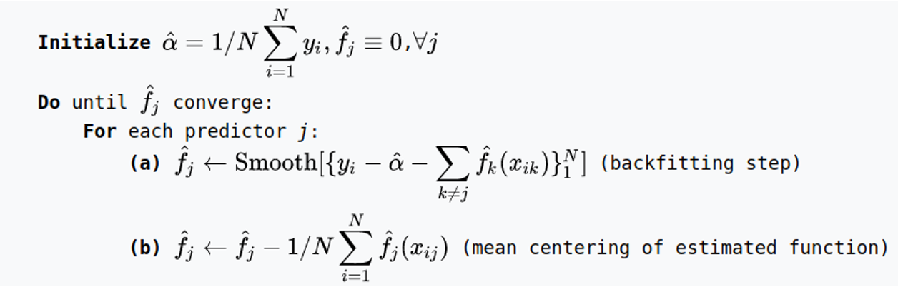
The backfitting algorithm trains GAMs iteratively using a coordinate descent approach. Start with initial functions, then repeatedly update each function to fit the residuals from all other functions. This process converges to the optimal additive decomposition. It’s computationally efficient and works well even with many features.
Generalized Additive Models (GAMs): Pros and Cons
✅ Pros:
Non-linear flexibility : Automatically learns smooth curves for each featureBetter predictions : Captures non-linear relationships without manual feature engineeringStill interpretable : Visualize each \(f_j(x_j)\) independentlyMaintains additivity : Easy to understand feature contributions
⚠️ Cons:
No interactions by default : Must explicitly add interaction termsComputationally expensive : Finding all pairwise interactions is infeasible with many featuresHarder to explain : Shape functions less intuitive than linear coefficientsOverfitting risk : Requires careful smoothness tuning
GAMs balance flexibility and interpretability nicely - more expressive than linear models but still visualizable. But the no-interaction constraint can be limiting. If temperature and humidity interact to affect outcomes (e.g., heat index), a pure GAM will miss this synergistic effect and may underfit.
Explainable Boosting Machines
\[\begin{equation}
g(\mathbb{E}[y]) = \beta_0 + \sum f_j(x_j)
\end{equation}\]
\[\begin{equation}
g(\mathbb{E}[y]) = \beta_0 + \sum f_j(x_j) + \sum f_{ij}(x_i, x_j)
\end{equation}\]
However, as with linear regression, we can manually add interaction terms to the GAM model by including additional predictors of the form \(X_j \times X_k\) . In addition we can add low-dimensional interaction functions of the form \(f_{jk}(X_j , X_k)\) into the model.
EBMs extend GAMs by automatically detecting and including pairwise interaction terms. This gives the model more expressiveness while keeping visualization tractable since we only need to show 1D shape functions and 2D interaction heatmaps. Microsoft’s InterpretML library implements this efficiently using gradient boosting.
Explainable Boosting Machines
\[\begin{equation}
g(\mathbb{E}[y]) = \beta_0 + \sum f_j(x_j)
\end{equation}\]
\[\begin{equation}
g(\mathbb{E}[y]) = \beta_0 + \sum f_j(x_j) + \sum f_{ij}(x_i, x_j)
\end{equation}\]
What if we have a lot of interactions? How do we choose our interactions?
Automatically selecting which interactions to include is an active research area. EBMs use gradient boosting to greedily select the most important pairwise interactions during training. The boosting process alternates between improving main effects and interactions, naturally prioritizing the most impactful terms.
Explainable Boosting Machines
VIDEO
This video from Microsoft Research demonstrates the InterpretML library and EBMs in action. Watch how the system automatically discovers important feature interactions and visualizes their effects on predictions using partial dependence plots and interaction heatmaps.
Partial Dependence Plots (PDPs)
What PDPs show: The marginal effect of a feature on the predicted outcome
Mathematical idea: Average the model’s predictions across all data points while varying one feature
Y-axis : Change in prediction (relative to baseline)X-axis : Feature valuesCurve shape : Reveals linear, monotonic, or complex relationships
PDPs marginalize the model output over the distribution of other features. For each value of feature X, we compute predictions for all data points with X set to that value, then average those predictions. This shows the average effect of X on predictions. The curve reveals whether the relationship is linear (straight line), monotonic (always increasing/decreasing), or more complex with peaks and valleys.
PDPs: Advantages and Limitations
✅ Advantages:
Intuitive : Easy to understand and explainModel-agnostic : Works with any modelCausal hints : Suggests feature importanceShows shape : Reveals non-linear patterns
⚠️ Limitations:
Independence assumption : Assumes features are independent (often violated!)Averages hide details : Misses heterogeneous effectsUnrealistic combinations : May average over impossible feature valuesMax 2 features : Can’t visualize high-dimensional interactions
The independence assumption is critical: PDPs assume you can vary one feature while holding others at their marginal distribution. But if features are correlated (e.g., house size and number of rooms), the PDP may average over unrealistic combinations. For example, it might average predictions for “1000 sq ft with 10 bedrooms” which doesn’t exist in reality. ICE plots (coming next) help reveal when PDPs are misleading by showing individual trajectories instead of averages.
Visualizing EBMs (or GAMs)
Partial dependency plot
This PDP shows how predictions change as we vary one feature while marginalizing over all others. The y-axis shows the average prediction change from the baseline, making it easy to see each feature’s isolated effect. The rug plot at bottom shows the distribution of actual feature values - always check this to ensure you’re not extrapolating beyond the data.
Visualizing EBMs (or GAMs)
Partial dependency plot
Here we see multiple partial dependence plots arranged in a dashboard layout. This allows comparing the relative importance and functional forms of different features at a glance. Features with flat lines have little effect, while steep curves indicate strong influence on predictions.
Visualizing EBMs (or GAMs)
Partial dependency plot
This shows a 2D partial dependence plot for an interaction term between two features. The heatmap reveals how the two features jointly affect predictions, capturing synergistic effects that 1D plots would miss. Darker regions indicate combinations that strongly influence predictions.
Visualizing EBMs (or GAMs)
Partial dependency plot
Individual Conditional Expectation (ICE) plots show how predictions change for individual instances rather than averaging across the dataset. Each line represents one data point. This reveals heterogeneity - different instances may respond differently to the same feature change, suggesting important interactions or subpopulations.
Visual Analytics (VA) Systems Using GAMs
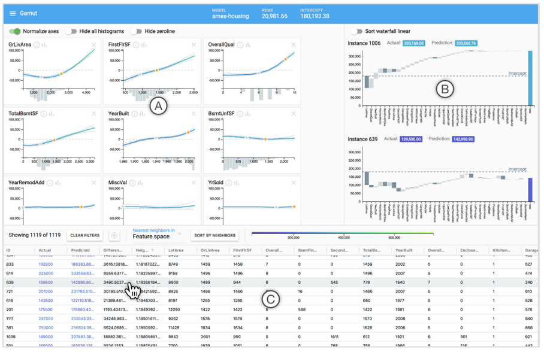Individual observation feature contributions
GAMUT from Microsoft Research explores how data scientists interact with GAM visualizations through a design probe study. The system shows individual feature contributions for each observation, helping users understand both global patterns (overall feature effects) and local predictions (why this specific instance got this prediction).
Visual Analytics (VA) Systems Using GAMs
This system provides multiple coordinated views of GAM models, including partial dependence plots for understanding feature effects, residual analysis for identifying model weaknesses, and instance-level explanations. Interactive brushing and linking allows users to select interesting subgroups and explore their characteristics.
Visual Analytics (VA) Systems Using GAMs
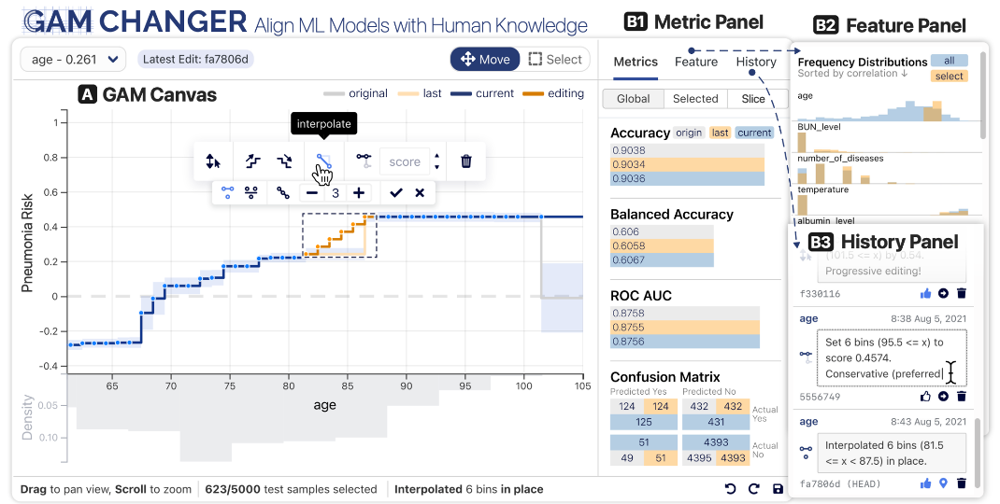GAM Changer
https://arxiv.org/pdf/2112.03245.pdf https://github.com/interpretml/gam-changer
GAM Changer allows users to interactively edit learned shape functions to inject domain knowledge. Data scientists can manually adjust function shapes (e.g., enforcing monotonicity where it makes business sense) while seeing real-time impacts on model performance. This human-in-the-loop approach bridges data-driven learning with expert knowledge.
Practice 1
Notebook: https://colab.research.google.com/drive/1nKE6WIApebHi67yfhH6k5mZN86evLZOM?usp=sharing
Some other libraries for PDP visualization: https://scikit-learn.org/stable/modules/partial_dependence.html https://interpret.ml/docs/pdp.html
This hands-on exercise walks through training GAMs with Python’s interpret library and creating partial dependence visualizations. You’ll explore how to identify non-linear patterns, detect feature interactions, and interpret model behavior through visualizations. Try comparing linear regression vs GAM on the same dataset.
Tree-based Models: Example
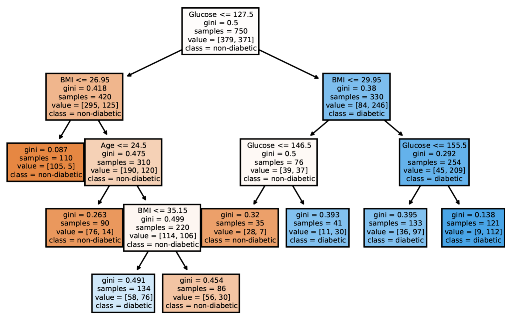A decision tree of diabetes diagnosis
Decision trees provide natural visual explanations through their hierarchical structure. Each path from root to leaf represents a decision rule with explicit conditions. This diabetes diagnosis tree shows how glucose level, BMI, age, and other factors combine hierarchically to predict disease risk. Trees are highly interpretable when shallow but can become unwieldy when deep.
Visualization of Trees
https://treevis.net/ provides a gallery of tree visualization. These trees are used to visualize hierarchical structures, but not just tree-based machine learning models. 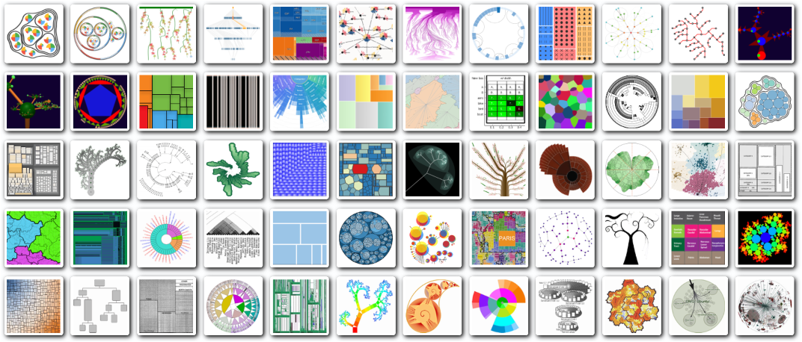
The TreeVis gallery showcases diverse tree visualization techniques from decades of HCI and InfoVis research. While many are designed for file systems, organizational charts, or taxonomies, the layout algorithms (node-link diagrams, treemaps, sunburst charts, icicle plots) all apply to ML decision trees. Choice of layout depends on what you want to emphasize - structure vs space utilization.
VA Systems Using Tree-based Models
It shows the flow of different class, and the class distribution in along the feature values.
BaobabView uses a custom layout optimized for classification trees. The width of edges encodes the number of instances flowing through each branch, and color shows class distribution at each node. This makes it easy to see where the model is confident vs uncertain, and which features do the most splitting work.
VA Systems Using Tree-based Models
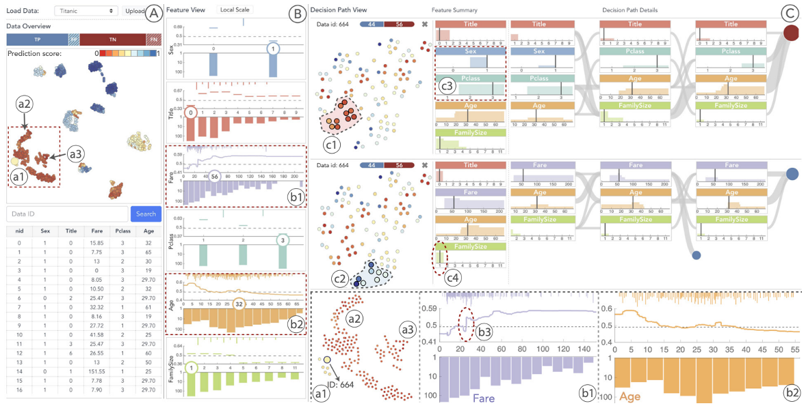iForest
iForest visualizes random forest ensembles rather than individual trees. The system aggregates predictions across trees to show which regions of feature space have high consensus vs disagreement among ensemble members. Areas of disagreement may indicate decision boundaries, noisy data, or underspecified regions where the model is uncertain.
Interactive Construction and Analysis of Decision Trees
Novel node-link visualization for very large decision trees
Interactive construction: users can split nodes, prune branches
Multiple views: overview, detail, rules
Elzen and van Wijk’s VAST 2011 paper presents an interactive system for constructing and analyzing decision trees. The visualization uses a novel compact layout that can display very large trees. Users can interactively split nodes, prune branches, and explore different tree configurations. The system combines overview, detail, and rule extraction views.
Interactive Construction: Video Demonstration
This video demonstrates the interactive capabilities of the Elzen & van Wijk system. Watch how users can interactively construct decision trees, explore different splits, prune branches, and analyze the resulting tree structure. The system provides real-time feedback on tree performance as users make modifications.
Interactive Construction: Colored Flow Visualization
Decision paths colored by class and features
This view shows decision paths colored by class labels (e.g., neck=no, lung, breast, bone=no). The flow visualization makes it easy to trace how different classes are separated through the tree. Width encodes the number of instances following each path. This design helps identify which features are most discriminative for each class.
Interactive Construction: Rule Visualization
Decision rules with feature splits
This view shows the explicit decision rules at each node (e.g., y-bar ≤ 9.00, x2ybr > 2.00). The rainbow coloring helps distinguish different paths through the tree. Users can see the complete rule set from root to any leaf, making it easy to extract interpretable decision rules from the trained tree.
Decision Rules: Different Structures
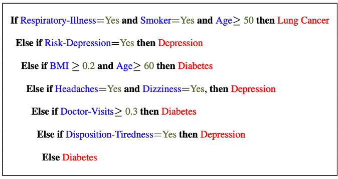 Clearly see how the decision is made and which rule is more important.
The final decision is made based on a voting mechanism.
A recent user study shows that “if-then structure without any connecting else statements enables users to easily reason about the decision boundaries of classes.”
Rule lists have a clear priority ordering with if-then-else chains - rules are tried sequentially until one fires. Rule sets allow multiple rules to fire simultaneously and vote on the final decision. User studies show people find rule sets more intuitive because they don’t require mentally tracking a cascading else chain. Each rule stands independently.
Decision Rules: Different Structures
Disjunctive normal form (DNF, OR-of-ANDs) Conjunctive normal form (CNF, AND-of-ORs)
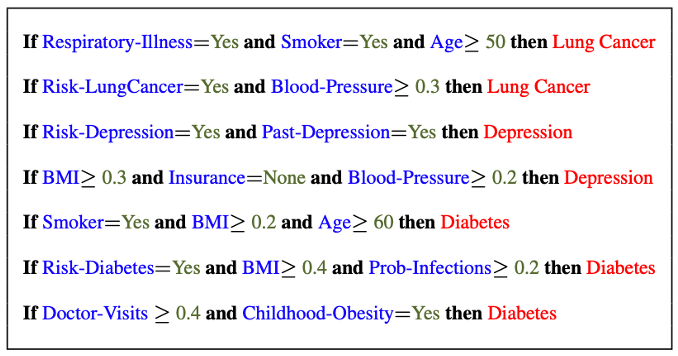What form does this rule set follow?
This example shows DNF (Disjunctive Normal Form) rules: each rule is a conjunction (AND) of conditions, and we predict positive if ANY rule fires (OR). DNF is more common in ML because it naturally represents disjoint decision regions in feature space. CNF would require all conditions across rules to be met simultaneously, which is less useful for classification.
Decision Rules: Visual Factors Influence Rule Understanding
Can different visualizations of rules lead to different level of understanding of rules?
If so, what are the visual factors influence understanding and how they play a role in rule understanding?
This research investigates how visual presentation affects rule comprehension. Factors like rule ordering, grouping, highlighting, and textual formatting all influence how quickly and accurately people understand rule-based models. Good visual design can make complex rule sets much more accessible to non-experts, while poor design obscures patterns.
Evaluation of Rules
Given a rule below:
If \(X\) , then class \(Y\) .
Support / Coverage of a rule:
\[\begin{equation}
\text{Support} = \frac{\text{number of instances that match the conditions in } X}{\text{total number of instances}}
\end{equation}\]
Confidence / Accuracy of a rule:
\[\begin{equation}
\text{Confidence} = \frac{\text{number of instances that match conditions in } X \text{ and belong to class } Y}{\text{number of instances that match conditions in } X}
\end{equation}\]
Support measures how frequently the rule applies (what fraction of data it covers). Confidence measures how accurate the rule is when it fires (what fraction of covered instances are correctly classified). Good rules balance both - high confidence but very low support means the rule is too specific. High support but low confidence means it’s too general and inaccurate.
Global Surrogate
Imagine that we have a black-box model (too complex to understand the internal structure), can we use white-box models to help us understand the model behavior of the black-box model?
Global surrogate models approximate a complex black-box model with an interpretable white-box model. Train a decision tree or rule set to mimic the black-box’s predictions. This trades some accuracy for interpretability - you’re explaining the black-box’s behavior, not the underlying true relationship. Useful when you need interpretability but your best-performing model is opaque.
Global Surrogate
Open the black box by understanding a “surrogate model” that approximate the behavior of the original black-box model.
The surrogate training process: feed data through the black-box to get predictions, then train an interpretable model (decision tree, linear model, rules) to predict what the black-box would predict. The surrogate’s feature importances and structure reveal what the black-box learned. Check surrogate fidelity - how well does it match the black-box predictions?
However…
What you want:
What you get:
The classic surrogate model problem: you want a simple, interpretable explanation that’s also highly faithful to the black-box. But there’s often a trade-off - simple surrogates may miss important patterns (low fidelity), while high-fidelity surrogates become too complex to interpret. This is the fundamental tension in explanation approaches.
VA System for Rule List
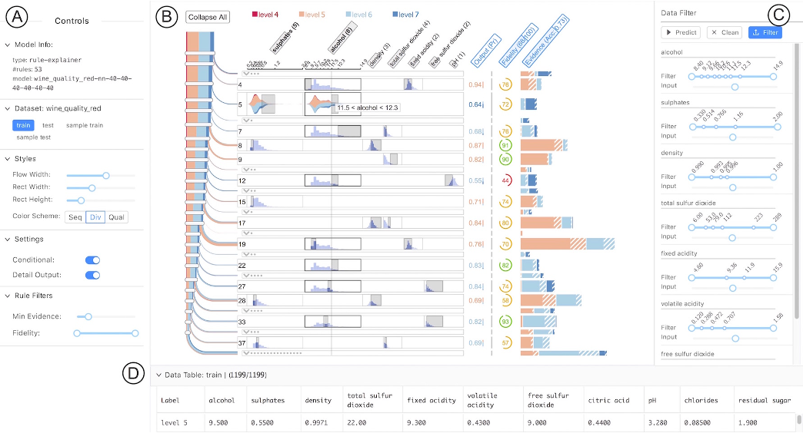RuleMatrix
RuleMatrix visualizes rule lists using a matrix layout where rows are rules and columns are features. Cell color/intensity shows feature values in each rule’s conditions. This compact representation lets you quickly scan for redundant rules, identify which features are most commonly used, and spot patterns across the rule set. Interactive features support rule refinement and editing.
VA Systems for Rules in Random Forest
Explainable Matrix
Explainable Matrix extends rule visualization to random forest ensembles. Each tree generates rules, and the system aggregates and visualizes rule consensus across the forest. Users can see which rules appear consistently vs which are unique to specific trees. This helps understand ensemble behavior and identify stable patterns that the forest relies on.
Other white-box models?
Naive Bayes
K-nearest neighbors
etc.
Beyond the models we’ve covered, other naturally interpretable models include: Naive Bayes (shows probability contributions from each feature via Bayes rule), K-Nearest Neighbors (predictions explained by showing similar training examples), and Logistic Regression (similar to linear regression but for classification). Each provides different forms of interpretability suited to different explanation needs.
Practice 2
Notebook: https://colab.research.google.com/drive/12LV2Z_1BbP3efACYp2QxzsPaOrIn8a8l?usp=sharing
This hands-on exercise covers decision tree training, visualization, and rule extraction with sklearn. You’ll experiment with tree depth, pruning strategies, and extracting interpretable rules from trained trees. Try comparing different tree visualization libraries and see how tree structure affects interpretability and performance.
Outline
Model Interpretation and Explanation White-box Approaches and Visualizations Related Research in VIS & AI
Manipulating and Measuring Model Interpretability
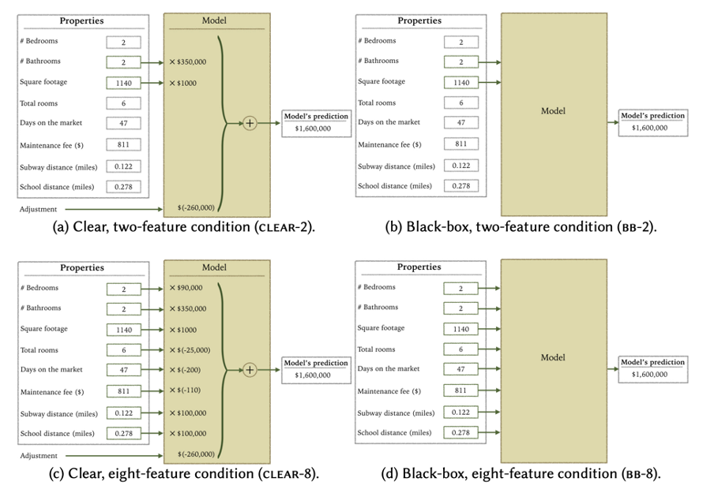https://arxiv.org/abs/1802.07810
This paper asks fundamental questions: Can we quantitatively measure interpretability? Can we manipulate model structure to increase interpretability while maintaining performance? The authors propose metrics for tree complexity, sparsity, and other interpretability factors. This work is important because it moves interpretability from a vague concept to something measurable and optimizable.
Stop explaining black box machine learning models for high stakes decisions
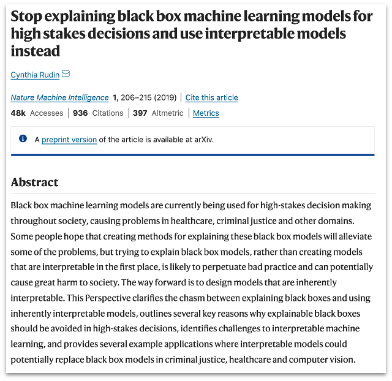https://www.nature.com/articles/s42256-019-0048-x
Cynthia Rudin’s influential paper argues that for high-stakes decisions (healthcare, criminal justice, lending), we should use inherently interpretable models rather than explaining black-boxes post-hoc. Post-hoc explanations can be misleading, incomplete, or unfaithful to the model. Instead, invest effort in building accurate interpretable models from the start. This sparked important debates about the interpretability-accuracy tradeoff.
Slice Finder: Automated Data Slicing for Model Validation
How about we use whether the model prediction is wrong or not to train a “surrogate tree”?
https://ieeexplore.ieee.org/stamp/stamp.jsp?tp=&arnumber=8731353
Slice Finder uses a clever approach: train a decision tree to predict where your model makes errors. The tree splits identify data slices where performance degrades. This automates the manual process of searching for problematic subgroups. The resulting tree provides an interpretable description of failure modes - “the model struggles when age > 65 AND income < 30k”.
Toolkits
InterpretML: https://github.com/interpretml/interpret
InterpretML is Microsoft’s open-source library for interpretable machine learning. It implements GAMs, Explainable Boosting Machines (EBMs), and various explanation techniques. The library includes both glass-box models (inherently interpretable) and black-box explanation methods (LIME, SHAP). It provides unified APIs and visualization tools, making it easy to compare different interpretability approaches. Highly recommended for practical work.